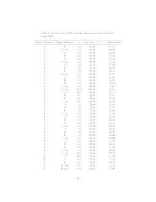
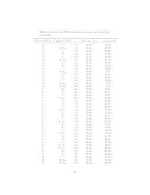
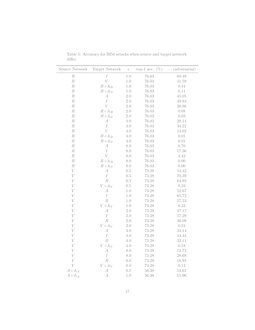
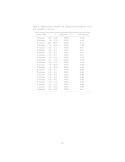
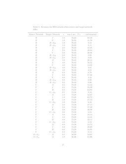
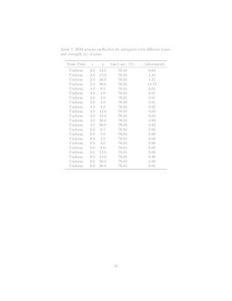

Adversarial attacks have exposed the intricacies of the complex loss surfaces approximated by neural networks. In this paper, we present a defense strategy against gradient-based attacks, on the premise that input gradients need to expose information about the semantic manifold for attacks to be successful. We propose an architecture based on compressive autoencoders (AEs) with a two-stage training scheme, creating not only an architectural bottleneck but also a representational bottleneck. We show that the proposed mechanism yields robust results against a collection of gradient-based attacks under challenging white-box conditions. This defense is attack-agnostic and can, therefore, be used for arbitrary pre-trained models, while not compromising the original performance. These claims are supported by experiments conducted with state-of-the-art image classifiers (ResNet50 and Inception v3), on the full ImageNet validation set. Experiments, including counterfactual analysis, empirically show that the robustness stems from a shift in the distribution of input gradients, which mitigates the effect of tested adversarial attack methods. Gradients propagated through the proposed AEs represent less semantic information and instead point to low-level structural features.


Cite as: S2SNets \cite{folzpalacio2020}
@InProceedings{folzpalacio2020,
author = {Folz, Joachim and Palacio, Sebastian and Hees, Joern and Dengel, Andreas},
title = {Adversarial Defense based on Structure-to-Signal Autoencoders},
booktitle = {The IEEE Winter Conference on Applications of Computer Vision (WACV)},
month = {March},
year = {2020}
}
Click below to download the PDF version of our poster. Please don't blame us if it crashes your computer. We've created a monster.
When comparing gradients from our autoencoders, no matter how we obtain them - may it be from a classification task or reconstruction of the input - what we get is more similar among the autoencoders than to any classifier on its own. And when we look at them we find that the autoencoders emphasize the “structure” of the image rather than its “semantic” content.

This is also reflected in the accuracy when these networks are attacked. We use FGSM, BIM, and Carlini-Wagner attacks to test their robustness. There is no compromise to accuracy with clean inputs and there is a definitive improvement when using just the autoencoder. However, our 2-step training process improves robustness yet again. The structure-to-signal fine-tuning more than doubles accuracy in some cases. This tells us that we are not shattering the gradients, but rather we are reshaping them to be less useful for attackers.

This work was supported by the BMBF project DeFuseNN (Grant 01IW17002) and the NVIDIA AI Lab (NVAIL) program.
We would like to express our special gratitude to the members at the MADM group and DLCC for their comments and support.

 
 
